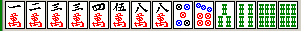
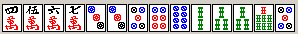
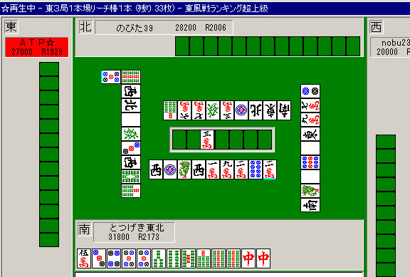

面前メンツ構成技術論
牌効率と言ってもいい。ピンフ作成技術にも近い。とにかく最速でリーチできる手に仕上げるための技術の紹介

超ラン勝ち組になるための目標：東12での先制リーチ率28％以上（リャンメン率72％超）、あるいは局あたり収入+1275以上
最強水準になるための目標：東12での先制リーチ率31.5％以上（リャンメン率74％超）、あるいは局あたり収入+1350
麻雀の基本的な攻撃：
点数の状況に特に制限がない限り、基本的に「誰よりも早く上がりやすい形でテンパイし、リーチする」ことができると非常に強くなれる。局終了のしかたにもっとも影響を与えることが多いのが「ベタオリ」の技術だとすると、２番目に影響を与えるのはこの種の技術である。和了の50％はリーチ和了だからだ。逆に言えば、「誰よりも早いリーチ和了」を制限する上がり方や攻め方はよくないと言える。例えば、一般にクソ待ち（カンチャンとか）のリーチは和了率が低くなり、リーチ後に放銃する確率も高くなる。あるいは、三色やイッツーのために効率を大きく犠牲に（５５６を５６にする程度なら良いが、リャンメンをカンチャンにするようではダメ）してはいけない。
「誰よりも早く上がりやすい形」というのは、「状況による」だろうが、例えばリャンメン以上の待ちであるとか、字牌のシャンポン待ちであることは、カンチャンやペンチャン待ちであるとか、４と５のシャンポン待ちであることよりもずっと「良い形」である可能性が強いだろう。
リーチのタイミング： 重要
まずは麻雀の基本的な攻撃である「リーチ」のタイミングについて書こう。
以下は現在のとつげき東北の打ち方をなるべく正確に文章化した「リーチのタイミング」である。
★は、10回中９回以上守るような、特に重要な項目を指す。
リーチしないのは、次のいずれかに該当する時。
★クソ待ちになった時で、待ちを変えられる時。ドラドラ手でも少し待てば好形になるなら待ちましょう。
★クソ待ちになった時で、安い時（親ならばどうしても待ちを変えられない場合はやむを得ず）
★ダマ5200以上で、平場の時（他家のリーチにつられて追っかけたりしないように）
★点数状況的にリーチしても無駄な時（その手を上がったらほとんど逆転できないとか、終局間際ダントツで出上がり可能とか）
・親リーチや役ホンイツなど他家が危険で、自分の手が安い時（親以外ならおおむねベタオリを推奨）
・２家リーチがかかっていて、自分の手がリーチして5200以上にならず安全牌を引いた時（リーチして5200以上ならもうリーチしてしまえ）
・残りツモ数が２枚以下でリーチして5200以上が確定せずかつ字牌待ちでない時
逆に、ほぼ必ずリーチするのは次のような時
★３面待ち以上で残り枚数が８枚以上ある時で、他家リーチなど特別な危険がない時
★リーチするとリャンメン5200以上が確定し、リーチしないと5200未満で、残り順目が特別に少なくない時
★待ちを変えることが困難（例えば13順目で、待ちの６９のうち９がない場合など）で、かつリーチすると5200以上の時
★親の役なしリャンメン
・ドラ単騎待ちになってしまい役がない時
ただし以上は、オーラス間際などでどうしても状況が許す・許さない場合には無視されることがある。
基本的には「平場でリャンメンテンパイしたら残り枚数などは考えずリーチする、クソ待ちテンパイしない」ことを頭において打つと良い。
今できるだけ自分の打ち方に合うようにこう書いてみたが、ようするにネガティブな意味でリーチできない時とは、「クソ待ち」である時か他家が特別に危険である時くらいである。
クソ待ちになってしまうとリーチできないのでその局はほとんど降りることに近いほど得点力が激減してしまう（もちろん、リーチしてもしょせんクソ待ち。放銃のことも考慮すると、好形待ちの半分以下の得点力しかない）。
上に書いたリーチ条件をしっかり守っていれば必ず強くなれる。もう東１の子でクソリーチのみ２待ちスジ引っかけなどしない。
例えば１３４５６の形で出上がり不可能なドラドラ手を張っている親。他家からリーチが来た（あるいは他家が食い仕掛けでテンパイした）。絶対に２待ち追っかけしてはいけない。絶対にだ。リーチしない条件をよくよめドヘタが。こういう時こそ、上がれる形にしなければいけないのだ。これを意識するだけでもぐんと強くなれる。上がりたい（得点が高い・上がられる・振るとやばい）時こそ、良い待ちにしなければならない。
なお、上にあるようなリーチ基準で判断できない場合は、基本的に即リーチしていれば問題なかろう。
少なくとも、２〜３順迷ってダマにした後でリーチするよりはいい。
「テンパイ」に対する意識を変える：
リーチ条件に引っかからないようにテンパイするためには、テンパイに対する意識を変える必要がある。
テンパイすることは主としてリーチ攻撃をするためであって、攻撃としていまいち役立たないもの（リーチできないようなもの）はテンパイではない。
東１にカン３ソウ待ちの役なし手をテンパイしてどうなるのだろうか？
クソリーチする？
ツモるまでまつ？（無事つも上がれる確率って低いよ）
他家からリーチがかかったらどうする？（まさか追っかけするのか？ あるいは・・・テンパイ維持のために何となく危険牌を切り続けるのかドヘタ！）
こんな嫌な悩み事が出てきたのは「くずテンパイ」したからで、「くずテンパイは攻撃として役立たない＝ある意味テンパイではない」のだ。
クソ待ちとは言え、テンパイできるということは、メンツはある程度そろっているのだから、メンツ構成を工夫すれば大して苦労せずに、もっと攻撃力の高いテンパイにできたのだ。
クソ待ちも好形も同じ単位で比較してしまう「シャンテン数」で考えるのをやめることだ。
リャンメンが最後に残るとくずテンパイにならない。したがって、リャンメンは「テンパイ」のために必要だ。
一方、カンチャンやペンチャンが最後に残るとそれは「テンパイではない」。だから、テンパイするためにはなるべくリャンメンを作る必要がある。
ペンチャン１つ、リャンメン３つ、とメンツ候補があったとして、これだけがメンツ候補であったとする。
順当にメンツができていったとして、これだけがメンツ候補であれば「リャンメンテンパイ」する確率はたった55％である（結局ペンチャンが最後に残る確率は45％もある）。
くずテンパイはテンパイでないのだから、この４つだけをメンツ候補にしてしまうと、形としてテンパイしたうちの半分近くが無駄になる。攻撃力が半減する。
ペンチャンやカンチャンはあくまでもリャンメンの補佐として使いつつ、メンツ候補として「リャンメン」をいかにうまく４つそろえるかが、面前のメンツ構成技術の全てであると言っても良い。
そのための方法を紹介する。
くずテンパイしない技術： 超重要
くずテンパイはテンパイではないと考えること（ほとんど平均順位の向上に関係がない）。
正統なメンツ候補（つまりリャンメン）を常に数えながら４つ意識すること（おれは今でもこれをやっている）。
リャンメンとメンツを併せて４つに満たない場合は、必ず、リャンメン候補（浮き牌）を確保すること。
メンツ候補は頭に変化する時があるので、頭が完全に確定していない限り（そしてそういうことは少ない）、序順〜中順は浮き牌のメンツ候補を残すこと。
例：アンチくずテンパイの心 重要
よく超ランで見るのは、この形からすぐにリーチしてしまう場合や、９マンなどを切ってダマにする場合だ。いずれも大きな間違いだ。
６マンや６ソウを自分が切っているならともかく（いや、それでも序順でなければ）、どちらにしてもこんなクソ待ちでは、得点できる確率自体が35％程度である上に上がった場合でさえ得点が低すぎ、また追っかけされたらどうしようもない。典型的なドヘタリーチである。特にリーチのみなどであれば、放銃率を無視してさえ、リー棒出費（65％-1000点）と和了時収入（35％1600点程度）がまずまずつりあう程度にしかならない。こんなリーチに意味はない（というのも、少し待てば良い形になり大幅に収入を増加できるからである）。６を切って９待ちならばまだしも、５を切っての８待ちなどなら絶対にやめた方がいい。仮にドラドラのような高い手であっても、せっかくのチャンス手を和了率の低いクソ待ちでリーチしてしまうのは限りなくもったいない。
くずテンパイはテンパイではないと考えること。そうすると、この形からもっとも「テンパイ」に近いのは、明らかに９ソウを落とすことだ。６８マン５７ソウのどれを引いてもリャンメンピンフでテンパイできる。
重要なのは、ここでしたことは「リャンメン待ちにすることが目標」だということを忘れないことだ。つまり７マンと６ソウをせっかく浮き牌にしたのに、次に４ソウを引いて７マンを落として５ソウ待ちにしたら無駄である。４ソウを引いたら９ソウなどを落とし、今度は６８マンまたは３ソウを引くのを待つのだ（その際別の浮き牌をつもれば、当然４ソウは切ってよい）。
これをクソリーチして次の順目に追っかけされたら涙を流すしかないが、ピンフでリーチならまだ勝負にもなるだろう。
例外として、ここで９ソウや７マンがドラであるならリーチも可能だろう（８マンならやめた方がいいと思う）。
だが、９マンがドラなら、６ソウを切っている場合などでなければ、やはり９ソウを落としてリャンメンにした方が良い。
ドラドラの手などだと焦ってクソカンチャンでリーチする人が多いが、高い手の時こそ上がれる確率を上げてやらなければいけない。
ピンフのみを上がり損ねても大した損害ではないが、ドラドラ手をみすみす逃したら非常に痛い。
もちろんリャンメンに変わらずに他家に上がられたとか、上がりを逃したということもあるが、おれの経験上、このような形は「必ずテンパイを崩してよい待ちに変える」べきだ。ちなみにこの工夫が、おれの安定Ｒが2000から2080に上がったかなり主要な要因であると思う。
なお、この手で９ソウを切ることが有利だと言ったということは、もっと言うと９マンと９ソウの２トイツも持っていたこと自体が無駄であったということだ。もちろんメンツ候補が少ないうちは、トイツやカンチャン・ペンチャンも重要なメンツ候補になるだろうが、基本的には「リャンメンに、リャンメンに」伸ばしていく姿勢が大切だ。この牌姿になった時に河に５マンなどが捨ててあったら、少しメンツ構成法（主に浮き牌の残し方）を見直すべきだ。つまりこの状態に中の浮き牌をつもった時点で９ソウか９マンを落としておくくらいでいい。
しばしば「とつげき東北は基本的な牌効率がなってない」と言われるが、これは「正しいテンパイ」をするための打ち方である。なお超ラン内で1000試合単位のおれの先制リーチ率は34％〜36％（ダマで上がる東３東４は除く。計測時により若干ばらつく）、うちリャンメン率は71〜75％で、これは最上の平均値の25％-60％よりも圧倒的に高い。圧倒的に先制リーチが早く、ツモが多く（得点が高く）、追っかけに強く、平均順位とトップ率が高くなる。こうなるとどうやっても安定Ｒ2000を切ったりはしなくなる。牌効率というのが「最速でくそテンパイする」ことを意味するならばおれは確かになっていないが、だからこそおれは勝てる。平凡な打ち手が信じているような下らない「セオリー」を信じつづける限り、800試合先制リーチ率35％リャンメン率72％などという平凡でない成績を出すことはできない。
（この手は結局7700点で和了した）
例：テンパイ直前の工夫 超重要

メンツ＋リャンメンが４つに満たない場合は、必ず浮き牌をリャンメン候補として残す。
ここからは６ソウを切るべきだ。８マンよりもリャンメンを構成しやすいからだ。
同様にこのような形も８ソウを切る。
ただし、この状態で４マンとか７マンをすでに場に捨ててしまっているような場合は、フリテンテンパイになってしまうので別の浮き牌をつもるまで６８８ソウの形のまま待っていい。その時にトイツがアンコ化したら（リャンメンテンパイしたら）当然リーチしていいが、先に５８ピンを引いた場合は、やはり８ソウを落とす。
そして他の浮き牌をつもったら８ソウを落としてテンパイを崩す（６ソウを落とすとリャンメンテンパイできる確率を下げてしまうので絶対に８から切ること）。
リャンメン＋カンチャン＋浮き牌 という形はリャンメン先制リーチのために非常に効率の良い形で、リャンメンリャンメンにならない限り、極力この形を求めるようにするといい。
常に「リャンメン＋カンチャン＋浮き牌のイーシャンテン」を目指して打つこと！ 非常に重要であり、メンツ構成の全てと言ってもいい。
ここでリャンメン＋カンチャン含みトイツ（６８８など）で残すように打つか、浮き牌を優先するかで、先制リーチ率には大幅な違いが出るだろう。つまり、成績に大きく影響するだろう。超ランの平均的な打ち手はほぼ確実にこの形から５マンを切る。だからせいぜい平均的な成績しか出せないのだ。
なお、カンチャン＋カンチャンのような、くずテンパイがほぼ確定してしまうような残り方をした場合、特に順目が遅くなければ適当な浮き牌を残してカンチャンを落としてしまう（シャンテン数を下げる）方が良いことが多い。
例：テンパイに近づく段階での工夫 重要
「シャンテン数」にこだわれば６マン切りのところだが、ここからは２ソウを切ることが多い。３回に２回以上はカン３ソウが残ってしまう（テンパイしない）形だし、５ソウが壁になっているのでこの部分のリャンメン化が難しい。
リャンメン＋カンチャン＋浮き牌は有効だと言ったが、同じカンチャンでもリャンメンに伸びないカンチャンは利用価値がだいぶ落ちる。
ここで２４ソウではなく１３マンなら、当然５ピンを切るべきだ（リャンメン＋カンチャン＋浮き牌の形）。
例：どうしてもクソ待ちになりそうだ
メンツ候補は２２２ピン７７７ソウの２つと、リャンカン３５７ピンがある。３メンツしかなく、しかも残る部分がクソ待ち＋クソ待ちの形なので６マンは残しておきたいところだが、タンヤオもあるので出上がり可能なダマで手変わりを待てるため、２ソウを落とすほどでもない（特に高得点を目指すのでなければ）。くずテンパイの悪さは、出上がりできないこと（攻撃にも防御にもならず仮につもっても得点力が低い）にあり、ダマで上がれてリャンメンにも切り替え可能なら、クソ待ちでもまあしょうがない。もしこれが２４ソウでなくて１３ソウならおそらくたいていは１ソウを切るだろう。６マンを切るとかなり高い確率でクソ待ちテンパイしてしまうが、それが役なしならもう何の意味もないからだ。この形からの好形への変化として、２ソウをつもった後に３マンにひっついてリャンメン化するようなこともある。
頭を流動的に考えることは、くそ待ちを避けることにとって重要だ。例えばペンチャンが２つもあるようなダメ配牌の時に、８８を頭と考えるのではなく、ペンチャンのうち片方は頭候補として使い８マンを浮き牌候補と考えるようにするとくずテンパイになりにくくできると思う。
ちなみにリャンカンは、早い段階ではメンツ候補とみなして良いが、テンパイ直前になった時にはあまり有効なメンツ候補ではない（リャンメン３つとリャンカン１つがあるとリャンメンテンパイできる確率は75％あるが、最後の最後にリャンカンとリャンメンが残ると50％になる）。リャンカン・リャンメンが最後のメンツ候補に残ってしまった場合、他で４５６７のような好形ができれば順目が遅くなければリャンカンを落とすことが多い。「くずテンパイする＝テンパイしない」よりは、遅れてでもテンパイする方が良いに決まっているからだ。もしくずテンパイになったらだまにして、それから浮き牌を新たなメンツ候補としてテンパイを崩す。
例：くずテンパイしそうなことが明白な時
メンツ候補として７８９ピン、２３４ソウ、７８９ソウは良いが、このままではくずテンパイする確率が高い。３マンまたは２ピンを引いた場合のみ６９ソウ待ちになるが、これではメンツ候補が４つあるとは言いにくい（半々以上の確率でくずテンパイになるような１シャンテン形はぜひとも避けたいものだ）。
クソ待ち＋クソ待ちにはしてはいけない。したがって６ソウ・３ピンを仮のメンツ候補として、１ピンを処理する。５ソウ７ソウ４ピンのどれかを引けば正統なメンツ候補になる。また２ピンを先に引いた場合はフリテン候補になってしまうので、他の部分に２〜８の牌を引いたら３ピンを切ってそちらをメンツ候補に変える。
ペンチャンやカンチャンなどの悪形は、他に充分なメンツ候補や浮き牌などができない場合には切らずに残しておくべきだが、テンパイ間際になった時にはどんどん捨てよう。「本当のテンパイ」にするために(笑)。
テンパイ直前以外の打ち方：
テンパイ直前でない間は、とにかくリャンメン候補になり得る部分をなくさないようにしつつ、普通に手を進めていい。
例：頭とメンツ候補を数えるかぞえかた
まあ上級者なら迷わないと思うが、そうでないと一見迷うかもしれない。
４つのメンツ候補を数えると良い。メンツ候補が頭に変化する可能性も考えること。
２３４マン６７ピン２３ソウ５５５ソウがメンツ候補。しかし、頭が確定ではなく、例えば５ソウや７ピンが頭になるかもしれない。その時にはメンツ候補が１つ足りなくなるだろう。４６ピンと６８ソウならば、４６ピンの方がリャンメンになりやすく、したがってここでは８ソウを切る。６ソウは、４７ソウ引きなどの際に５ソウを頭と見なすために必要である。
例：メンツ候補がかなりそろっている時

４５６７とか、４５５６のような連続形は非常に柔軟にメンツや頭になりやすく、暫定的に「２メンツ候補」と見なしてよい。
この場合、マンズ４５６７部分で２メンツ、ピンズ５６で１メンツ、ソーズ２３で１メンツを見ることができる。基本的にメンツ候補が４つあることになる。
しかし４５６７はまだ充分なメンツ候補ではないので、序順では７ソウなどもメンツ候補として良いだろう。あるいは２ピン１ピンを先に引いてソーズが頭になるかもしれないが、いずれにしても最も不要な牌が８ピンであることはわかるだろう（８ピンは７ソウよりもメンツになりにくい）。４メンツ候補を充分な形にすることを常に心がけること。
これでもうマンズ２メンツはほぼ確実に確保できる。４メンツそろったので７ソウを切る。
４メンツ候補が充分形でそろったなら、基本的には２３３などのようなダンゴ形は必ず残せばよい（頭が変化してより待ちが良くなったりするので）。浮き牌などの「メンツ候補」はもういらないわけだ。
例：同様にメンツ候補がかなりそろっている時
これも例１と大差ない。メンツ候補は２３４５ピンから２つ程度、２３４４５ソウから２つとれる。しかしそれらの部分は頭になるかもしれず、メンツ候補として完全ではない。４マンはメンツ候補として有力であるから絶対に切ってはいけない。また７マンも、６マンのひっつきによってメンツ候補になり得るし、８マンが入っても良い。８９ソウがいらない。
例：浮き牌の選択
ここでリャンメン候補は２３ピン５６ピン２３ソウの３つがあるが、浮き牌はどれを選択すると良いだろうか？
７ソウは、８ソウ引きの場合にメンツが完成するのでメンツ候補の浮き牌としては６マンや５ピン、３ソウより優れている。
６マンと３ソウについてだが、３ソウは１４ソウあたりを他のメンツ候補（２３ソウ）と競合させてしまうので、効率がやや悪い。５ピンについても同様だ。おれはここで３ソウを切ったが、こういう場合にダンゴ状のまま曖昧に考えて６マンを切らず、５ピンまたは３ソウを切れるようになろう。
例：好形メンツ候補が足りない
１２３ピン６７ソウ５７９ピンはメンツ候補だが、残り一つを確保したい。ここから１２ソウを切るのは少し早いかなと思う。
１２ソウ切りは（５ピンと６マン）を（１２ソウと６マン）の代わりにメンツ候補にしようとする行為だが、（５ピンと６マン）のメンツ候補としての価値は、４ピン５７マンのどれかを引いた時に発揮されるだろう。６ピンは、５５６７の形になるから他のメンツとして使われる。（１２ソウと６マン）の場合は３ソウ５７マンを引けばメンツまたはメンツ候補となるので枚数は同じであり、ダイレクトにメンツができる可能性を持つ分有利だろう（もちろん、５ピンはその後もう一度６ピンを引いたり４ピンを引いた時などにも使えると言えば言えるが、それはまあ、後に他の浮き牌を引けば代用可能な程度のことなので大した差ではなかろう）。これが６マンと５ピンではなく４マンと７マンくらいになれば、１２ソウを先に落とすことも充分考えられるのだが。
他のメンツとメンツ候補として必要な牌がかぶってしまっている場合はこのようにメンツ候補としての価値が減ることがあるので、どんな時でもペンチャンカンチャンを落とす、などと考えるのではなく他の牌や場に出てしまった牌との関連を考慮しなければいけない。
とつげき東北の打ち方は、この程度に細かい状況で確実な選択をしているというレベルまではいってない。時々は焦って１２ソウから落としているかもしれない（６マンを切ることはまずないが）。ペンチャンやカンチャンなどの不完全なメンツ候補というものは、完全な中の浮き牌よりは価値が低く、しかし他のメンツとかぶったりするような浮き牌よりは価値が高いこともあることを意識してほしい。もちろんここで５５７９ではなく３３５７くらいになればまた別だ・・・つまりその場合、５７の方だけ見てもかなり充分な形になり得るメンツ候補であり、３を自由な浮き牌と捉えられる程度に良い形だからだ。５５７９からは通常２メンツ求めることはそう簡単ではないが、３３５７から２メンツ求めることは大して難しいことではないのだ。
好形メンツ候補が足りない時には「浮き牌浮き牌」でフォローするのが非常に良いが、それも難しい場合には「浮き牌＋不完全メンツ候補（トイツ含む）」で代用することもあり得るということである。そして繰り返すが、「不完全メンツ候補のみ」にしてしまうことだけは避けねばならない。
例：好形メンツ候補が足りない
リャンメン・メンツ候補が１３５マン、７８ピンの他にない。こういう場合はリャンメン候補として浮き牌を大事にしよう。６８ソウ、５マンは浮き牌として重要だし、９マンは１１２ピンと合わせてメンツ候補となるので現段階で取っておいていい。７８８ピンから１つ８ピンを落としておくと良いだろう。その後３ソウや４ソウあたりを引いたらどれを切るか？ ９マンあたりを落としていくと思う。頭というのはメンツ候補からいくらでも変化させられるので、序盤のうちは固定しない方がいい。２ソウならどうかと言うと、２ソウツモ切りにすると思う。２ソウがメンツ候補として有利に働くのは３ソウツモの場合だけだが、それは９マンまたは１ピンを引く確率と変わらない（いずれも４枚）から、この程度に悪形の手であればメンツ候補として価値が高いとは言えないからだ。他の部分がもっときれいなら、９マン切りなども考え得る。１３５や１１２のように、メンツ候補として３枚も必要な形がいくつかあると、浮き牌を余分に持てない。だからトイツの価値が高まるのだ（浮き牌が２つあれば、その周辺４つの牌のどれかを引けばメンツ候補にできるが、浮き牌を１つしか持てない場合、それが２や８であったらトイツの方が価値が高くなることが多い・・・このあたりは自分で打ちながらよく考えてみよう）。メンツ候補として２３や５６のような好形があると、その分余分に浮き牌などを持てるため、２つのトイツよりむしろ２つの浮き牌を抱えた方が良いということになる。
例：好形メンツ候補が足りない（多トイツ）
メンツ候補が３４ピンと１２３ソウの他にあまり見えない。７ピンと３ソウはメンツ候補だが、これらだけからメンツを２つ作ることは簡単ではない。この牌の中でなら、７９９ピンも他のトイツと併せてかなり有力なメンツ候補になる（トイツのどれかか、８ピンを引けばメンツや頭として固定できる）。２マンはいらないだろう。これが２マンでなく３マンだったなら、どれかトイツを落としても良いだろう。３つのトイツから２つのメンツを作ることなど期待しない方がいい。さっきの例にも出したが、「２つのトイツ」はメンツになるために４枚の牌を持つので、２や８の浮き牌よりはメンツ候補として優れていることが多い（くず手の場合）。
例：クソ待ちにすると得点が高くなる
リーチピンフにするか、カンチャン受けでリーチ三色にするかという選択があるが、リーチの他に１はん（ピンフとかドラ）がある場合は確実にリャンメンに受ける。
例外は、当たり牌の安めの方が３枚切れている程度の時や、点数状況的に高い点数がどうしても必要な時くらいだ。
リーチの他に２はんある場合（タンピンやピンフドラ１）は安め牌がが残り０枚などでない限り三色はつけない。
リーチのみリャンメンかリーチ三色か、という選択ではとつげき東北は半々程度以上で三色に受けていると思う。
和了直前ほど冷静に考えよう：
配牌がかなりきれいな形であっても、その局に自分が上がれる確率というのはそれほど高くない。
しかし１シャンテンとか、２シャンテン程度になったら、そこから上がる確率というのはだいぶ高まってくる。
和了に近づくにつれて、１つ１つの選択の失敗・成功が重要になる。テンパイ直前ほど、どうすれば早く上がりやすくなるかをよく考えよう。
そこで失敗しないことは、成績に大きく影響する（それにはくずテンパイをできるだけしない、ということも含まれる）。
超ランで勝ち越せないメンバーの打ち方を見ていると、どうもテンパイにたどりつくことばかり考えているように感じる。
テンパイしても和了率が低い待ち（ただのクソカンチャン待ちなどだと30％程度でしかも安い）にならないようにするという姿勢がほとんどなく、シャンテン数を下げよう下げようとしているように思える。だから先制リーチもできず、上がっても順位がよくならず、トップがとれないのだ。
悪くとも、先制リーチ27.5％超リャンメン率65％超程度をまずは目指そう。その水準であれば、メンツ構成については文句なく勝ち組に入れると思う。
メンツ構成の基礎要素： かなり重要
ペンチャンやカンチャンを処理するときに内側から切る人が多いが、このクセはなくした方が良いと思う。
だいたいの場合、それらは外側から切る方が良い。特にカンチャンはそうである。
13から3を切って、1を切る前に4を引いて「しまったリャンメン損した」というようなことはしょっちゅうあるだろうが、13から3を先に切ったことによってちょうどリーチがかかり、かつその当たり牌に、1ではなく3であるための特別な理由があり、しかも勝負する状況になって振った、というような状況はほとんどありえない。3であればその後4が来たら当たり牌であっても使いつぶすこともできる。1が当たり牌として残ると、上がりは絶望的になる。
1256の形から43と引いた場合に、1から切っていれば23456の形になってフリテンとは言えすぐにまたメンツが作れるが、2を切っていたらここには１メンツしか見込むことができない。
セオリーと違うが、「ペンチャンやカンチャンは外側から切れ」。
ちなみに既にメンツやメンツ候補が完全に揃っている場合は、この限りではないが、「内側から切れ」とは言わない。「より他家に危険になりそうな方を選んで、そちらから先に切れ」。
牌効率の基礎要素： 超重要
和了のために必要充分な複数の独立な「課題」がある。
例えばそれは｛「頭を作る」「メンツを作る」「メンツを作る」「メンツを作る」「メンツを作る」｝というセットであったり、｛「１シャンテンにする」「１シャンテンからテンパイにする」「テンパイしてから上がり牌が出る」｝のセットである。各々のセット内の一つ一つの条件を「課題」と呼ぶ。
こういったいくつかの「課題」各々の成功率を高めることはもちろんだが、その成功確率が最も低い「課題」の成功率をより高める打ち方が、最も効率的な打ち方である。
おれはこの思考を以って「牌効率」と呼ぶ。
和了のために、50％の確率で成功する何かと、20％の確率で成功する何かの両方に成功しなければならないとする。
結局これを和了できる確率は50％×20％＝10％である。
ここで、新しいツモによって、次のうちどれかを選択できる状態になった。
１）50％→60％ 20％→15％ （「％の合計」は＋５）
２）50％→40％ 20％→26％ （「％の合計」は−４）
「課題」において、その成功確率のうち最も低い確率をより高める打ち方が、最も効率的な打ち方であるということを頭に入れておけば、一瞬で２）を選択できる。
結局、１）の変化をした時の和了率は 60％×15％＝９％、２）の場合は40％×26％＝10.4％ であり、２）の選択が正しいことがわかる。
「％の合計」が少々減ったとしても、各々の％の最低値をなるべく高めることが、全体の成功率を高めるということがおわかりだろう。
１）などは「％の合計」が増えているにもかかわらず、和了確率は下がってしまう。
２２３ ６８８の選択において、６や８ではなく２を切るのが「正解」であるのはこのような背景に基づいているのだ（２３の方はほっといてもメンツになるが、６６８はできるだけサポートしてやらなければメンツ化確率が平均化しない）。
他の例として、７８マン ２３７８ピン ２２４５６６７７ソウ とあるとする。
明らかに「メンツオーバー」であるが、ここから４ソウを切るべきか、または他のリャンメンターツを１つ切るべきか？
これは和了のために「リャンシャンテン時の受け入れを多くする」か「イーシャンテン時の受け入れを多くする」かの選択と言える。
当然、成功率が高い「リャンシャンテン時の受け入れ」よりも、より成功率が低い「イーシャンテン時の受け入れ」を多くする方が良い。
つまりこの「何切る」への論理的解答は、リャンメンターツ落としなのだ（※コンピュータ実験による追試結果は下に記述）。
もちろん、最初の例で50％→75％のように大幅に確率を上昇でき、しかももう片方の確率がほとんど減らないような選択においては別だが、基本的にこの原則に従えば、何を切るべきかで迷うことは半分以下になると思う。
「和了への各々の課題クリア確率を平均化しながら、平均を高めていく」ことが、牌効率の良い打ち方なのだ。
この知識と、実際にどうターツ選択をしていくかの技術さえあれば、牌効率は非常によくなる。かなり多くの「何を切る？」問題に対して「同じ一打」を打てるようになる。
麻雀の技術として非常に重要である。
これこそが「牌効率」の重要な原理であって、和了するための技術において受け入れの枚数が１枚多いだのうんぬんというのは瑣末な問題に過ぎず、もしそれを「牌効率」と呼ぶなら、それは「和了率を高める」こととあまり関係のない、意味のない指標である（和了率は上げたくないがシャンテン数だけをどうしても落としたいという人は俗に言われる方の「牌効率」を大事にしてください）。
※補足
このような確率的洞察が、おれが「クズテンパイ」を「（一般で言うところの）牌効率」を落としてまで嫌う背景である。
テンパイする確率が80％、その後和了できる確率が35％のクソリーチより、テンパイする確率が50％になってもその後和了できる確率が60％であるリャンメンの方が良い（確率の「平均」は下がっているが、和了確率は上昇している。これがおそらくおれが時々「牌効率悪い」と言われるにもかかわらず結果データとして「抜群の牌効率」を出している原因ではなかろうか？）。
一般に、イーシャンテンからテンパイすることは簡単だが、テンパイから和了することは難しい。リャンシャンテンをイーシャンテンにすることはもっと簡単で、できる限り早い段階から「テンパイ時の受けの良さを最優先」に打ち、次に１シャンテン、その次に２シャンテン・・・の受けを良くすることだ。
※コンピュータ実験による追試
７８マン ２３７８ピン ２２４５６６７７ソウ
これについては、何切る掲示板上で解答を募ったところほとんどの人が４ソウ落としをすると答えていた（「誰に聞いても４ソウ落としだった」旨の書き込みもあった）。上の理論を説明しても「状況による」と言われた。「和了目指しプログラム」の自動打ちによって和了率比較実験を行い検証したところ、8順後までの和了を目指す場合に、「リャンメンターツを落とす」選択は「４ソウを切る」選択よりも、「４ソウを切る」選択が「６ソウを切る」選択よりも優れているのと同じ程度の意味で優れていることがわかった。この手で「状況によって６ソウを切る」という解答がぱっと出てこない人は、「状況によって４ソウを切る」と答えるべきではないだろう。「状況によって４ソウを切る」とは答えたが「状況によって６ソウを切る」と答えられなかった人は、「６ソウ切りはほとんどの場合無駄」とわかっているのに、「４ソウ切りも同様の意味でほとんどの場合無駄」だとわかっておらず、彼らが漠然と「リャンメンターツ落としも４ソウ切りもだいたい同じだろうな」と蒙昧に捉えていたことを端的に表している。自分の選択した「４ソウ切り」がリャンメンターツ落しよりもひょっとすると微妙に不利であったらどうしようという迷いから、「状況による」という保険をかけたのであろうが（もし明らかに不利だとわかっていて、しかも「状況」を加味することが大切だと感じていたなら、同様にして「６ソウ切り」も挙げられなければならなかったのだ・・・）、残念ながらそのことは裏目に出てしまった。実際は彼らが想像したよりもずっと、４ソウ切りは不利だったのだ。いくつかの直感は認識論的な錯覚（つまり多くの人の直感が同じような誤謬を犯すという事）を持ち、そういった部分において理論的判断はしばしば抜群に良い結果をもたらす。
※数学的補足
片方がpの確率で「成功」し、もう片方がqの確率で「成功」するような課題がある。ある一打の選択で、pはp+Δpに増加し、qはq-Δqに減少する場合を考える。
結局この一打によって全体の成功確率は (p+Δp)(q-Δq)=pq＋Δp・q−p・Δq-ΔpΔq に変化する。
qΔp＞p・Δq＋ΔpΔq となるような場合にこの一打は有効である。
ΔpΔqは非常に小さな値なので
Δp／Δq ＞ p／q
が判定の式になる。
ΔpとΔqの比がおよそ１であるとき、明らかにqとして大きい方を選択するのが正しいことがわかる。これが上記への数学的裏付けである。
人間が実際に打つ場合にはこの式を使えるかは疑問だが、一応理論上の選択の目安である。
いちいちこの式を評価できなくとも、「確率の低い方の確率を上げる」ことを意識していれば実用上は問題ないだろう。
さすがに、223 688 西から、「23部分以外のメンツ化確率を上げる」ために西を残す人はいないと思うので。
先制リーチ率を上げる（トップ麻雀にする）ための打ち方： かなり重要
先制リーチ率が高くなるとトップ率が増える。たくさんのデータを見たが、一般的にこの傾向は非常に強い。
平均順位の分布を「自然に」するなら、明らかに１位の数＞２位の数＞３位の数＞４位の数となるのがよく、そうでない順位分布はどこかで不自然な打ち方をしていると思われる（おそらく４位を必要以上に恐れるためにトップになれるチャンスを逃すなど、どこかで不利な判断をしていると思う※）。
トップ麻雀にする、つまり不自然でない順位分布にするためには、東１の最初から「ラスを避ける」ために1000点を狙っていくような打ち方はあまり適さない。
超ランの負け組の打ち方で一番気になるのは、東１や東２で第一打から役牌をポンして全力で1000点上がるようなタイプだ。安上がりをするくせに他家の動きが見えていないから東３やオーラスで大きい手に放銃して４位になったりしている。安く上がっておいて状況を考えず高く振るのだから、勝てる要素が全くない。
おれの打ち方だと、役牌トイツがあっても、他に役牌がなく、ホンイツやトイトイやドラドラのような手も見えない場合、子なら基本的には１鳴きしない。例外は、端のほうの牌でトイツが多くてあわよくばトイトイができそうな場合とか、ドラが端牌で頭のない比較的きれいな配パイのとき（ドラ単騎にすぐできる場合）、リーチ棒とドラがあるような場合だが、いずれにしても平場で役牌ドラ１クラスの配牌の90％は２鳴きである。
このことは先制リーチ率を上げるため（トップ率を増やすため）に極めて重要なことだ。
（ただし、超ランの他の最強水準の人で役牌を必ず一鳴きする人もいる。おそらく、小さい点差の時に競り勝つ技術が優れているのだろう）
東１から1000点を上がり切ることは確かに順位的に有利になるのだが、問題は、ポンやチーをまじえてもテンパイが遠い段階ではテンパイはほとんど早くならないこと、テンパイが近い段階であればリーチをした方が収入が増加することにある。
例えばこの手で第一打の西をポンして
８８９ １２ ６６７８ ４６ 西ポン
の形になると上がりやすいと言えるだろうか？
少し待っていれば、ここまでバラバラの配牌ならば（実際ここで一鳴きせずにリャンメンが１つ増えたように）
８８９ ２４６６７８ ３４ 西西 とか ８８９９ ６６７８ ４６８ 西西
くらいの形はすぐにできるだろう。
バラバラであればあるほど有効牌は多く、たくさんの浮き牌の中からすぐにリャンメン形やトイツができるものだ（上のほうで「牌効率の基礎要素」に書いたことを理解していれば、ここで西をポンしたり５ソウをチーすることがあまり意味のないことだと理解できるだろう）。
少し待っただけでここまで上がりやすい形になった。
この場合今ドラをポンされたので降りるが、もし上がりを目指すなら、この形からなら西をを２鳴きすれば上がりきることは難しくない。
もう一つ例を挙げると、
１３５８９ １５８８ ７ 役牌ドラ（ポン）
このようにある時に、ペンチャンだからとチーしたりするのはまずい（リャンメンならなおさらだが）。
別に無理にチーしなくとも少しすれば
１１３ １３５８８ ７８
くらいの形にはできるだろう（要するに、どこを引いてもペンチャンよりはましな形くらいすぐできるということだ）。
ほっといても愚形は処理できるわけで、最初の段階でいきなりチーして
１３５ ５８８ ７ 役牌（ポン） ７８９（チー）
こんな形になってしまったら、有効牌が減って良い形ができにくくなるだけである。わざわざ愚形を残すように残すようにしても、結局シャンテン数が下がるだけで和了できる確率は変わらないかむしろ減少する（ちょうど、おれの「牌効率」は悪いにもかかわらずおれの先制リーチ率・リャンメン率・和了率は高いことと同じだ）。
メンツができればできるほど有効牌は減ってゆくので、メンツ候補が少ない段階になって愚形が残るのは良くないが、最初の段階では愚形があっても問題はない。
そういう意味で、バラバラの時に焦って食ってメンツを作るのはまったく無駄なことだ。
（上がれそうにないほどバラバラの手だからと役牌を食い仕掛けして、きっちり上がりきった記憶はそんなに多いだろうか？ たいていの場合は先制リーチをかけられて困ったとかだろう。たまには上がれるとしても、面前で進めても、または２鳴きにしても、同じくらいは上がれるし面前の方が点数が高くなる。）

ただしこれくらいの状況になれば話は別で、中をポンしていい。
オーラス間際のトップであること、リーチ棒があることなどに加え、面前でテンパイするためには８ソウツモまたはアンコ化が必要なこと（２枚目がもし山にあったら和了は絶望的）、そろそろテンパイしないと他家に上がられるかもしれないこと、言い換えると、ポンすればかなり上がりやすくなることが理由である。
以上は「牌効率の基礎要素」によっても補完される。
急いでメンツを揃えることより、テンパイ時やイーシャンテン時の受け入れを良くすることの方が、和了のためにはより重要である。
まとめて繰り返す。
★リーチ率（トップ率）を上昇させるために、3900以上が難しいような配牌の時、序順・子で役牌の１鳴きをしない
★バラバラの時は、食い仕掛けしても和了チャンスがあまり増えない
★形がいいときは役牌は頭やコウツにしてリーチに使える
★食い仕掛けをする時も、シャンテン数を下げることではなく上がりやすくなることを考える（リャンメン形をチーしてペンチャンテンパイ、などは序順では避ける）
※補足
順位の分布をどう狙うかはゲーム理論的な解決になる。
「放っておくと４位になるゲーム」において、どの程度の割合で力を注いで他の順位を狙うかということだ。
ある特定の順位を取ることに全力を注いだとすると、ランダムに力を注ぐ場合に比較してその順位は劇的に取りやすくなるだろう。
例えば他家が全員１位＝２位＝３位の割合で狙ってくるなら、自分がどの順位を目指しても成功率は同じになるから、トップを目指した方が戦略上有利になる。
そこで全員がトップを目指すようになる。そうすると今度は、トップは多くの人によって狙われるために、トップを取ることが劇的に困難になる。その状態でなら、今度は無理してトップを狙うより２位を確保した方が結局は平均順位が良くなる。
しかし全員がそのことを考慮して「２位狙い」を始めると、逆に２位を狙うよりトップを無理して狙う方が戦略上有利になるだろう。
結局、それらを考慮して他家が順位の狙い方を調整しながら最良の戦略を目指すと、定常状態が存在するとすればそこでは「対価に応じた自然な順位狙い困難さ」が生じていることになる。
このような状態においては、例えば「２位＞１位＞３位＞４位と狙う戦略が、１位＞２位＞３位＞４位と狙う戦略に対して有利」というようなことはない。
また、定常状態に到達せず、「トップ狙い→２位狙い→トップ狙い・・・」のように戦略を変化させることが最良の方法である可能性もあるが、他家がどの戦略をとってくるのかがあらかじめわかっており、かつ順位の分布まで細かく把握していない限り実用することは困難である。
もし把握していたとしても、「２位率を〜〜％上げてラス率を〜〜％下げる」ような行動を明確に理解することもまた難しい（まさかたった500試合の結果から判断する気ではなかろう？）。それらのうち一部の情報が誤っているときに損害が大きいのは、やはり「不自然な順位分布」を狙った場合である。
実際は「果敢にトップを狙う」とか「ラスだけは避ける」とか「東風ではＲが重要なのでＲが高い人は２位確保する」とか、様々の「戦略」がまことしやかに言われていて（そのほとんどは無意味だと思うが）、ランダムな相手がどのような戦略をどんな分布で使っているかは把握不可能であり、その場合は単純に「良い順位をより優先する」ことが有効である。
「２位率を高める」ことを目指して２位が取れるなら、最初から２位だけを目指せば平均順位２位（超ランなら安定Ｒ2500超）である。２位を目指しても一部、いやむしろ多くの場合失敗して３位や４位になるからゲームなのだ。同様に、トップ率を増やそうとしても簡単には増えないし、単にラスを回避するというだけでも簡単ではない。トップ率が高まるように打ち方を変えていけば、おのずと２位率も上昇し、ラス回避率も増える。それを我々は「強くなる」と呼ぶ。